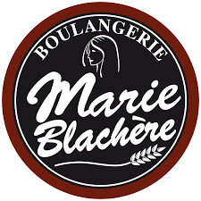

EXPÉRIENCE PROFESSIONNELLE
Animateur d'équipe :
ETIENNE LACROIX ARTIFICES / MAZÈRES / SEPTEMBRE 2018 - JUILLET 2025
Pilotage de la production
- Assurer le bon déroulement des opérations de fabrication
- Gestion de la production et optimisation des flux et en-cours
- Planification de l'atterrissage de la chaîne de production
- Suivi des indicateurs de performance et objectifs journaliers
Innovation & Amélioration continue
- Conception et déploiement d'un outil de gestion d'équipe digitalisé : allocation dynamique des opérateurs selon les présences, répartition optimisée des postes, tableau de bord de suivi des objectifs en temps réel
- Digitalisation du management visuel de la performance
- Optimisation des processus de production
Sécurité & Qualité
- Contrôle rigoureux des procédures sécurité/qualité (environnement pyrotechnique)
- Formation continue des équipes aux standards
Management d'équipe
- Animation quotidienne de l'équipe de production
- Développement des compétences et polyvalence des opérateurs
- Gestion de la charge de travail et répartition des tâches
Employé
commercial :
commercial :
Intermarche PYREVAL / PAMIERS / Mars 2017 - Août 2018
- Gestion du rayon et merchandising
- Relation client et vente
- Gestion des stocks et approvisionnement
- Opérations commerciales

Manageur magasin :
BOULANGERIE MARIE BLACHERE / PORTET-SUR-GARONNE / 2016 - 2017
- Encadrer et coordonner le travail des vendeurs(euses)
- Etablir le planning de travail et les procédures à respecter
- Recruter et former le personnel
Adjoint responsable
magasin :
magasin :
CARREFOUR CITY / LACROIX-FALGARDE / 2011 - 2015
- Supervision des opérations
- Coordination et organisation du travail d'équipe
- Réalisation des commandes et réassortiment des rayons
- Réalisation des tâches administratives et financières
FORMATIONS
Certification des compétences en entreprise - Animer une équipe de
travail
PURPLE CAMPUS / FOIX / 2022
Formation chef d'équipe
ORGANISME DE FORMATION "CEGOS" / MAZÈRES / 2021
COMPÉTENCES
Organisation & gestion du temps
Prise d'initiative et autonomie
Transmission & pédagogie
Analyse des performances
Amélioration continue & curiosité
Travail d'équipe & leadership
Analyse & résolution de problèmes
Développement durable
Compétences techniques en cours d'acquisition :
HTML, CSS, JavaScript
Git / GitHub
Visual Studio Code
Responsive design
Logique de programmation / débogage
DIPLOMES
2010 : BTS Management des Unités Commerciales à l'ESICAD 31670
LABEGE
2007 : BAC STI génie électrotechnique au lycée Charles de Gaulle
31600 MURET
CENTRES D'INTÉRÊT
Cyclisme / VTT
Veille technologique & apprentissage du code